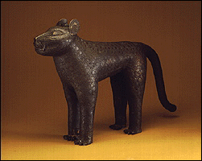

|
African Art | |
|
(c) |
African, Nigeria (Benin) |
|
View a variety of figures, masks, decorative arts, and
textiles from West and Central Africa, including a rare
14th-century wooden sculpture, a Yoruba king's beaded crown,
and a bronze leopard made for the ruler of Benin. This
gallery includes an
interactive
program. | |